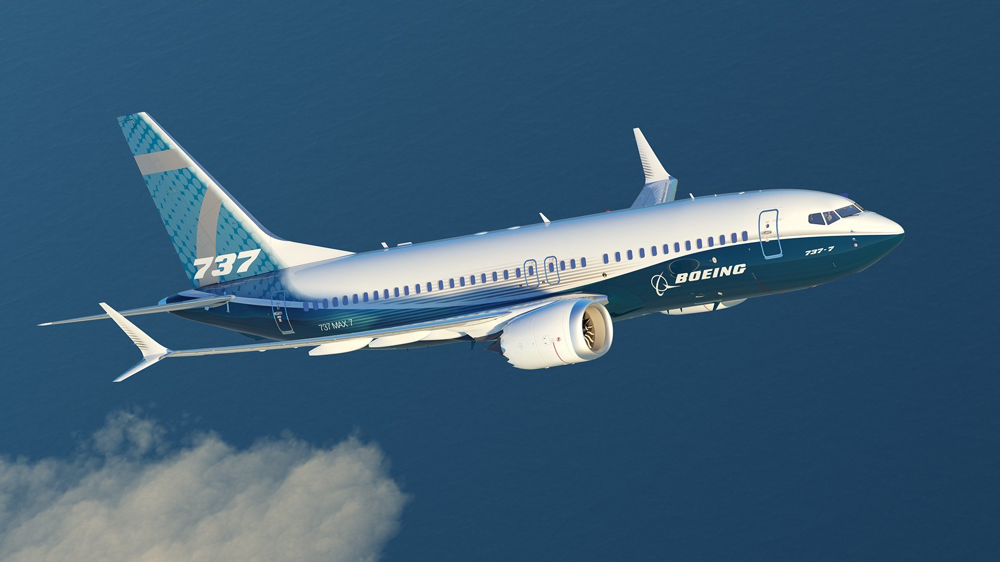

Boeing 737 MAX 7
El 737 MAX 7 o 737-7, originalmente basado en el 737-700, Boeing anunció el rediseño del MAX 7 como derivado del MAX 8 en el Salón Aeronáutico de Farnborough en julio de 2016, acomodando dos filas más de asientos que el 737-700.
El rediseño utiliza las alas y el tren de aterrizaje del 737-8, salidas de emergencia dobles sobre las alas en lugar de la configuración de una sola puerta, alarga el fuselaje 1,9 metros, reajusta y fortalece la estructura y modifica los sistemas e interiores para dar cabida a la mayor longitud. Boeing planea mejorar su alcance de 3850 millas náuticas (7130 km) a 3915 mn (7251 kilómetros) después de 2021.